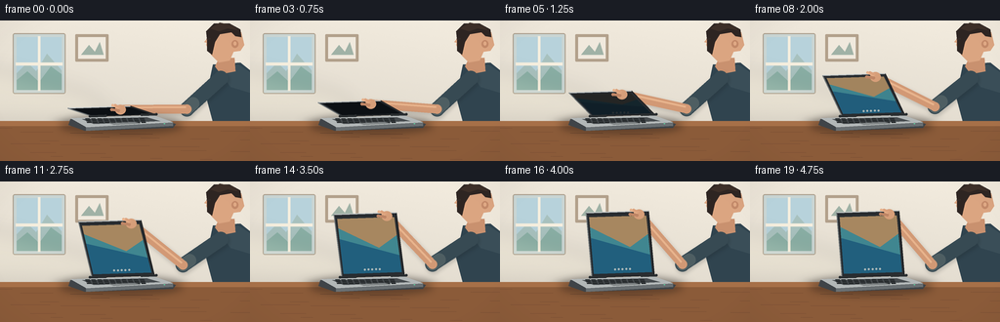
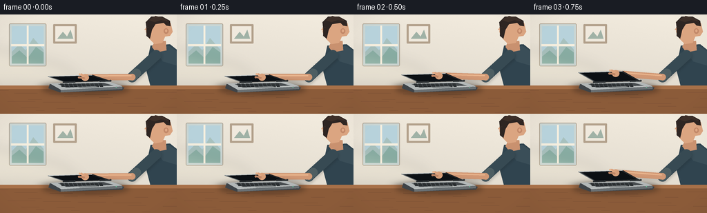

CODING AGENTS AS PIXEL WORLD MODELS
traex/GPT-5.6-Sol · motion_rationality_0050
点击播放 · 原生 RGB 像素
逐轮保存的候选
回放视频、检查图与代码变化。
每份候选均可单独播放。实际图片检查记录在下方工具轨迹中。
候选 01播放与检查图
点击播放 · 原生 RGB 像素


展开代码变化
--- 上一保存版本
+++ 本次保存版本
@@ -0,0 +1,210 @@
+from pathlib import Path
+import math
+import numpy as np
+from PIL import Image, ImageDraw, ImageFilter
+import artifact_io
+
+W,H,N = 256,144,20
+S=4
+rng=np.random.default_rng(12)
+
+def P(pt): return tuple(int(round(v*S)) for v in pt)
+def poly(draw, pts, fill, outline=None, width=1):
+ draw.polygon([P(p) for p in pts], fill=fill)
+ if outline: draw.line([P(p) for p in pts+[pts[0]]], fill=outline, width=width*S, joint='curve')
+def line(draw, pts, fill, width, joint='curve'):
+ draw.line([P(p) for p in pts], fill=fill, width=max(1,int(width*S)), joint=joint)
+def ellipse(draw, box, fill, outline=None, width=1):
+ draw.ellipse(P((box[0],box[1]))+P((box[2],box[3])), fill=fill, outline=outline, width=width*S)
+def smoothstep(x):
+ x=max(0,min(1,x)); return x*x*(3-2*x)
+def mix(a,b,t): return a+(b-a)*t
+
+def rounded_line(draw, a,b,color,width):
+ line(draw,[a,b],color,width)
+ r=width/2
+ ellipse(draw,(a[0]-r,a[1]-r,a[0]+r,a[1]+r),color)
+ ellipse(draw,(b[0]-r,b[1]-r,b[0]+r,b[1]+r),color)
+
+def ik_elbow(shoulder,wrist,L1=47,L2=68):
+ sx,sy=shoulder; wx,wy=wrist
+ dx,dy=wx-sx,wy-sy; d=max(1,math.hypot(dx,dy)); d=min(d,L1+L2-.01)
+ a=(L1*L1-L2*L2+d*d)/(2*d)
+ h=math.sqrt(max(0,L1*L1-a*a))
+ bx=sx+a*dx/d; by=sy+a*dy/d
+ # select the lower/bent-down solution
+ e1=(bx-dy/d*h,by+dx/d*h); e2=(bx+dy/d*h,by-dx/d*h)
+ return max((e1,e2), key=lambda q:q[1])
+
+def quad_interp(q,u,v):
+ # q: bottom-left,bottom-right,top-right,top-left
+ bl,br,tr,tl=q
+ x=(1-v)*((1-u)*bl[0]+u*br[0])+v*((1-u)*tl[0]+u*tr[0])
+ y=(1-v)*((1-u)*bl[1]+u*br[1])+v*((1-u)*tl[1]+u*tr[1])
+ return (x,y)
+
+def render(i):
+ t=i/(N-1)
+ # ease-in/ease-out opening, with the first instant almost still and a final hold
+ p=smoothstep((t-0.015)/0.88)
+ ang=math.radians(mix(7,77,p))
+
+ # warm, softly textured room
+ yy,xx=np.mgrid[0:H*S,0:W*S]
+ base=np.zeros((H*S,W*S,3),dtype=np.float32)
+ light=1-0.085*(yy/(H*S))+0.025*(xx/(W*S))
+ base[:,:,0]=238*light; base[:,:,1]=231*light; base[:,:,2]=218*light
+ noise=rng.normal(0,0.65,(H*S,W*S,1))
+ base=np.clip(base+noise,0,255).astype(np.uint8)
+ im=Image.fromarray(base,'RGB').convert('RGBA')
+ d=ImageDraw.Draw(im)
+
+ # window and wall details
+ d.rounded_rectangle(P((13,13,67,75)),radius=2*S,fill=(201,213,211,255),outline=(170,157,139,255),width=S)
+ d.rectangle(P((17,17,63,71)),fill=(183,210,219,255))
+ # hazy outdoor blocks
+ poly(d,[(17,54),(28,43),(37,52),(48,34),(63,51),(63,71),(17,71)],(168,193,190,255))
+ poly(d,[(17,61),(28,52),(40,63),(52,47),(63,55),(63,71),(17,71)],(137,174,164,255))
+ d.rectangle(P((38.7,16,41.3,72)),fill=(246,239,223,210))
+ d.rectangle(P((16,43,64,46)),fill=(246,239,223,210))
+ # simple framed print
+ d.rounded_rectangle(P((77,14,111,42)),radius=1*S,fill=(178,160,139,255))
+ d.rectangle(P((80,17,108,39)),fill=(240,233,221,255))
+ poly(d,[(83,35),(91,25),(97,32),(102,22),(106,35)],(160,178,166,255))
+
+ # cast light on wall
+ glow=Image.new('RGBA',im.size,(0,0,0,0)); gd=ImageDraw.Draw(glow)
+ gd.polygon([P((0,50)),P((90,74)),P((125,104)),P((0,104))],fill=(255,247,213,28))
+ glow=glow.filter(ImageFilter.GaussianBlur(9*S)); im=Image.alpha_composite(im,glow); d=ImageDraw.Draw(im)
+
+ # person behind action: torso, neck, head in right profile
+ # torso/sweater
+ poly(d,[(218,45),(246,43),(256,51),(256,112),(219,108),(211,78)],(48,68,79,255))
+ poly(d,[(222,48),(244,45),(256,53),(256,74),(236,68)],(58,78,88,255))
+ # neck
+ poly(d,[(224,39),(240,38),(241,52),(226,55),(220,47)],(201,145,111,255))
+ # head profile
+ poly(d,[(216,8),(234,5),(247,12),(250,25),(246,31),(239,32),(235,41),(224,43),(216,35),(211,25)],(219,165,129,255))
+ # nose / profile contour and ear
+ poly(d,[(214,16),(209,22),(215,24),(217,29),(222,28),(221,17)],(222,166,129,255))
+ ellipse(d,(237,20,244,28),(195,137,105,255))
+ ellipse(d,(239,21.5,242,25.5),(225,170,134,255))
+ # hair
+ poly(d,[(212,20),(211,11),(219,3),(235,3),(246,9),(247,17),(241,16),(237,12),(225,14),(220,22),(217,35),(212,31)],(46,37,34,255))
+ poly(d,[(215,8),(225,2),(238,5),(244,10),(233,8),(224,11)],(61,47,40,255))
+ # face details
+ line(d,[(211.5,19),(215,18.5)],(71,54,48,255),1)
+ ellipse(d,(213.2,18.3,214.4,19.4),(46,39,36,255))
+
+ # laptop geometry
+ BL=(94,98); BR=(158,96)
+ vx=-25*math.cos(ang); vy=-68*math.sin(ang)
+ TL=(BL[0]+vx,BL[1]+vy); TR=(BR[0]+vx,BR[1]+vy)
+ quad=[BL,BR,TR,TL]
+ grip=(mix(TL[0],TR[0],.72),mix(TL[1],TR[1],.72))
+ wrist=(grip[0]+8.0,grip[1]+3.0)
+ shoulder=(226,59)
+ elbow=ik_elbow(shoulder,wrist)
+
+ # arm shadow and articulated reaching arm (behind laptop, hand later in front)
+ armshadow=Image.new('RGBA',im.size,(0,0,0,0)); ad=ImageDraw.Draw(armshadow)
+ rounded_line(ad,(shoulder[0]+1,shoulder[1]+2),(elbow[0]+1,elbow[1]+2),(20,24,26,50),15)
+ rounded_line(ad,(elbow[0]+1,elbow[1]+2),(wrist[0]+1,wrist[1]+2),(20,24,26,45),10)
+ armshadow=armshadow.filter(ImageFilter.GaussianBlur(2*S)); im=Image.alpha_composite(im,armshadow); d=ImageDraw.Draw(im)
+ rounded_line(d,shoulder,elbow,(55,74,83,255),15)
+ # rolled cuff
+ rounded_line(d,(mix(shoulder[0],elbow[0],.82),mix(shoulder[1],elbow[1],.82)),elbow,(78,94,98,255),13)
+ rounded_line(d,elbow,wrist,(210,153,117,255),9.5)
+ # highlight on forearm
+ line(d,[(elbow[0]-1,elbow[1]-2),(wrist[0]-1,wrist[1]-2)],(232,180,141,180),2)
+
+ # desk shadow behind laptop
+ shadow=Image.new('RGBA',im.size,(0,0,0,0)); sd=ImageDraw.Draw(shadow)
+ sd.ellipse(P((53,99,193,118)),fill=(55,38,28,90))
+ shadow=shadow.filter(ImageFilter.GaussianBlur(5*S)); im=Image.alpha_composite(im,shadow); d=ImageDraw.Draw(im)
+
+ # table top and front fascia
+ poly(d,[(0,103),(256,103),(256,144),(0,144)],(139,91,57,255))
+ d.rectangle(P((0,103,256,108)),fill=(167,112,72,255))
+ # subtle grain
+ for k in range(22):
+ y=110+(k*13)%33; x=(k*41)%256; ln=12+(k*7)%35
+ line(d,[(x,y),(min(256,x+ln),y+.3)],(112,72,50,65),.55)
+ # laptop ground shadow on desk
+ shadow=Image.new('RGBA',im.size,(0,0,0,0)); sd=ImageDraw.Draw(shadow)
+ sd.ellipse(P((61,99,187,116)),fill=(31,25,23,100)); shadow=shadow.filter(ImageFilter.GaussianBlur(4*S))
+ im=Image.alpha_composite(im,shadow); d=ImageDraw.Draw(im)
+
+ # rear arm remains visible over desk but laptop base overlays it naturally
+ # laptop base lower shell
+ poly(d,[(72,101),(157,98),(180,106),(177,110),(87,113),(70,107)],(63,68,72,255))
+ poly(d,[(72,100),(157,97),(177,104),(88,109)],(178,183,183,255))
+ poly(d,[(88,109),(177,104),(177,108),(88,113)],(105,111,114,255))
+ # keyboard well
+ poly(d,[(84,101),(150,99),(164,103),(96,106)],(70,75,78,255))
+ # keyboard rows, small but legible
+ for row in range(3):
+ y0=100.3+row*1.7
+ for col in range(10):
+ x0=87+col*6.2+row*.7
+ poly(d,[(x0,y0),(x0+4.4,y0-.12),(x0+5.4,y0+1.0),(x0+1,y0+1.18)],(33,37,39,255))
+ poly(d,[(112,105),(138,103.9),(143,105.3),(117,106.6)],(145,150,151,255), (115,120,121,255),1)
+
+ # display/lid, outer bevel
+ poly(d,quad,(40,44,48,255),(28,30,32,255),1)
+ # visible screen inset is a bilinear inset
+ inner=[quad_interp(quad,.035,.05),quad_interp(quad,.965,.05),quad_interp(quad,.955,.93),quad_interp(quad,.045,.93)]
+ # Screen luminance comes up naturally as lid clears the base
+ on=smoothstep((p-.10)/.38)
+ c0=(int(12+13*on),int(16+37*on),int(20+51*on),255)
+ poly(d,inner,c0)
+ if on>.02:
+ # blue abstract wallpaper clipped to inner screen
+ mask=Image.new('L',im.size,0); md=ImageDraw.Draw(mask); md.polygon([P(q) for q in inner],fill=int(255*on))
+ screen=Image.new('RGBA',im.size,(0,0,0,0)); sc=ImageDraw.Draw(screen)
+ # broad diagonal atmospheric bands positioned within the quad
+ poly(sc,[quad_interp(quad,0,.05),quad_interp(quad,1,.05),quad_interp(quad,1,.6),quad_interp(quad,0,.88)],(35,104,137,210))
+ poly(sc,[quad_interp(quad,0,.62),quad_interp(quad,1,.31),quad_interp(quad,1,.92),quad_interp(quad,0,.92)],(70,147,156,220))
+ poly(sc,[quad_interp(quad,0,.80),quad_interp(quad,.65,.45),quad_interp(quad,1,.67),quad_interp(quad,1,.93),quad_interp(quad,0,.93)],(221,166,105,185))
+ # tiny dock dots
+ for j in range(5):
+ q=quad_interp(quad,.38+j*.06,.11)
+ ellipse(sc,(q[0]-1,q[1]-1,q[0]+1,q[1]+1),(224,232,225,190))
+ screen.putalpha(Image.composite(screen.getchannel('A'),Image.new('L',im.size,0),mask))
+ im=Image.alpha_composite(im,screen); d=ImageDraw.Draw(im)
+ # top and side rim highlights
+ line(d,[TL,TR],(194,199,199,255),1.35)
+ line(d,[TL,BL],(113,120,122,255),1)
+ # hinge cylinders
+ rounded_line(d,(92,98),(108,97.5),(43,47,49,255),2.6)
+ rounded_line(d,(145,96.5),(160,96),(43,47,49,255),2.6)
+
+ # hand and fingers gripping top rim, drawn foremost
+ # palm at wrist / knuckles at grip
+ ellipse(d,(wrist[0]-5.4,wrist[1]-5,wrist[0]+5.5,wrist[1]+5.1),(214,158,121,255))
+ # thumb hooks over front face
+ rounded_line(d,(wrist[0]-2,wrist[1]+1),(grip[0]-1,grip[1]+3),(190,133,101,255),3.1)
+ # index and middle fingers curl across top edge
+ for off,col in [(0,(231,178,140,255)),(2.6,(220,162,125,255))]:
+ a=(wrist[0]-2+off*.25,wrist[1]-2-off*.20)
+ b=(grip[0]+off,grip[1]-1.3)
+ rounded_line(d,a,b,col,2.7)
+ # nail highlight
+ line(d,[(grip[0]+.4,grip[1]-1.6),(grip[0]+2.1,grip[1]-1.1)],(244,203,171,255),.65)
+
+ # laptop edge glint and a status LED
+ line(d,[(88,109),(176,104)],(211,214,211,210),.65)
+ ellipse(d,(167.5,105.2,169,106.1),(103,218,164,255))
+
+ # soft foreground vignette
+ vig=Image.new('RGBA',im.size,(0,0,0,0)); va=np.zeros((H*S,W*S,4),dtype=np.uint8)
+ cx,cy=W*S/2,H*S/2
+ rr=((xx-cx)/(W*S*.72))**2+((yy-cy)/(H*S*.82))**2
+ va[:,:,3]=np.clip((rr-.48)*32,0,24).astype(np.uint8); va[:,:,:3]=np.array([36,24,20],dtype=np.uint8)
+ im=Image.alpha_composite(im,Image.fromarray(va,'RGBA'))
+ im=im.convert('RGB').resize((W,H),Image.Resampling.LANCZOS)
+ return np.asarray(im,dtype=np.uint8)
+
+frames=np.stack([render(i) for i in range(N)],axis=0)
+artifact_io.save(frames,Path(__file__).resolve().parent)
+print('saved',frames.shape,frames.dtype)
可观测工具轨迹
实际执行的命令与返回图片。
命令 1exit 0
/bin/bash -lc "cat prompt.txt && printf '\\n---RULES---\\n' && cat GENERATION_RULES.md && printf '\\n---SPEC---\\n' && cat task_spec.json"
命令 2exit 0
/bin/bash -lc "find . -maxdepth 2 -type f -printf '%p\\n' | sort"
命令 3exit 0
/bin/bash -lc 'cat artifact_io.py'
命令 4exit 0
/bin/bash -lc "cat > generate.py <<'PY'
from pathlib import Path
import math
import numpy as np
from PIL import Image, ImageDraw, ImageFilter
import artifact_io
W,H,N = 256,144,20
S=4
rng=np.random.default_rng(12)
def P(pt): return tuple(int(round(v*S)) for v in pt)
def poly(draw, pts, fill, outline=None, width=1):
draw.polygon([P(p) for p in pts], fill=fill)
if outline: draw.line([P(p) for p in pts+[pts[0]]], fill=outline, width=width*S, joint='curve')
def line(draw, pts, fill, width, joint='curve'):
draw.line([P(p) for p in pts], fill=fill, width=max(1,int(width*S)), joint=joint)
def ellipse(draw, box, fill, outline=None, width=1):
draw.ellipse(P((box[0],box[1]))+P((box[2],box[3])), fill=fill, outline=outline, width=width*S)
def smoothstep(x):
x=max(0,min(1,x)); return x*x*(3-2*x)
def mix(a,b,t): return a+(b-a)*t
def rounded_line(draw, a,b,color,width):
line(draw,[a,b],color,width)
r=width/2
ellipse(draw,(a[0]-r,a[1]-r,a[0]+r,a[1]+r),color)
ellipse(draw,(b[0]-r,b[1]-r,b[0]+r,b[1]+r),color)
def ik_elbow(shoulder,wrist,L1=47,L2=68):
sx,sy=shoulder; wx,wy=wrist
dx,dy=wx-sx,wy-sy; d=max(1,math.hypot(dx,dy)); d=min(d,L1+L2-.01)
a=(L1*L1-L2*L2+d*d)/(2*d)
h=math.sqrt(max(0,L1*L1-a*a))
bx=sx+a*dx/d; by=sy+a*dy/d
# select the lower/bent-down solution
e1=(bx-dy/d*h,by+dx/d*h); e2=(bx+dy/d*h,by-dx/d*h)
return max((e1,e2), key=lambda q:q[1])
def quad_interp(q,u,v):
# q: bottom-left,bottom-right,top-right,top-left
bl,br,tr,tl=q
x=(1-v)*((1-u)*bl[0]+u*br[0])+v*((1-u)*tl[0]+u*tr[0])
y=(1-v)*((1-u)*bl[1]+u*br[1])+v*((1-u)*tl[1]+u*tr[1])
return (x,y)
def render(i):
t=i/(N-1)
# ease-in/ease-out opening, with the first instant almost still and a final hold
p=smoothstep((t-0.015)/0.88)
ang=math.radians(mix(7,77,p))
# warm, softly textured room
yy,xx=np.mgrid[0:H*S,0:W*S]
base=np.zeros((H*S,W*S,3),dtype=np.float32)
light=1-0.085*(yy/(H*S))+0.025*(xx/(W*S))
base[:,:,0]=238*light; base[:,:,1]=231*light; base[:,:,2]=218*light
noise=rng.normal(0,0.65,(H*S,W*S,1))
base=np.clip(base+noise,0,255).astype(np.uint8)
im=Image.fromarray(base,'RGB').convert('RGBA')
d=ImageDraw.Draw(im)
# window and wall details
d.rounded_rectangle(P((13,13,67,75)),radius=2*S,fill=(201,213,211,255),outline=(170,157,139,255),width=S)
d.rectangle(P((17,17,63,71)),fill=(183,210,219,255))
# hazy outdoor blocks
poly(d,[(17,54),(28,43),(37,52),(48,34),(63,51),(63,71),(17,71)],(168,193,190,255))
poly(d,[(17,61),(28,52),(40,63),(52,47),(63,55),(63,71),(17,71)],(137,174,164,255))
d.rectangle(P((38.7,16,41.3,72)),fill=(246,239,223,210))
d.rectangle(P((16,43,64,46)),fill=(246,239,223,210))
# simple framed print
d.rounded_rectangle(P((77,14,111,42)),radius=1*S,fill=(178,160,139,255))
d.rectangle(P((80,17,108,39)),fill=(240,233,221,255))
poly(d,[(83,35),(91,25),(97,32),(102,22),(106,35)],(160,178,166,255))
# cast light on wall
glow=Image.new('RGBA',im.size,(0,0,0,0)); gd=ImageDraw.Draw(glow)
gd.polygon([P((0,50)),P((90,74)),P((125,104)),P((0,104))],fill=(255,247,213,28))
glow=glow.filter(ImageFilter.GaussianBlur(9*S)); im=Image.alpha_composite(im,glow); d=ImageDraw.Draw(im)
# person behind action: torso, neck, head in right profile
# torso/sweater
poly(d,[(218,45),(246,43),(256,51),(256,112),(219,108),(211,78)],(48,68,79,255))
poly(d,[(222,48),(244,45),(256,53),(256,74),(236,68)],(58,78,88,255))
# neck
poly(d,[(224,39),(240,38),(241,52),(226,55),(220,47)],(201,145,111,255))
# head profile
poly(d,[(216,8),(234,5),(247,12),(250,25),(246,31),(239,32),(235,41),(224,43),(216,35),(211,25)],(219,165,129,255))
# nose / profile contour and ear
poly(d,[(214,16),(209,22),(215,24),(217,29),(222,28),(221,17)],(222,166,129,255))
ellipse(d,(237,20,244,28),(195,137,105,255))
ellipse(d,(239,21.5,242,25.5),(225,170,134,255))
# hair
poly(d,[(212,20),(211,11),(219,3),(235,3),(246,9),(247,17),(241,16),(237,12),(225,14),(220,22),(217,35),(212,31)],(46,37,34,255))
poly(d,[(215,8),(225,2),(238,5),(244,10),(233,8),(224,11)],(61,47,40,255))
# face details
line(d,[(211.5,19),(215,18.5)],(71,54,48,255),1)
ellipse(d,(213.2,18.3,214.4,19.4),(46,39,36,255))
# laptop geometry
BL=(94,98); BR=(158,96)
vx=-25*math.cos(ang); vy=-68*math.sin(ang)
TL=(BL[0]+vx,BL[1]+vy); TR=(BR[0]+vx,BR[1]+vy)
quad=[BL,BR,TR,TL]
grip=(mix(TL[0],TR[0],.72),mix(TL[1],TR[1],.72))
wrist=(grip[0]+8.0,grip[1]+3.0)
shoulder=(226,59)
elbow=ik_elbow(shoulder,wrist)
# arm shadow and articulated reaching arm (behind laptop, hand later in front)
armshadow=Image.new('RGBA',im.size,(0,0,0,0)); ad=ImageDraw.Draw(armshadow)
rounded_line(ad,(shoulder[0]+1,shoulder[1]+2),(elbow[0]+1,elbow[1]+2),(20,24,26,50),15)
rounded_line(ad,(elbow[0]+1,elbow[1]+2),(wrist[0]+1,wrist[1]+2),(20,24,26,45),10)
armshadow=armshadow.filter(ImageFilter.GaussianBlur(2*S)); im=Image.alpha_composite(im,armshadow); d=ImageDraw.Draw(im)
rounded_line(d,shoulder,elbow,(55,74,83,255),15)
# rolled cuff
rounded_line(d,(mix(shoulder[0],elbow[0],.82),mix(shoulder[1],elbow[1],.82)),elbow,(78,94,98,255),13)
rounded_line(d,elbow,wrist,(210,153,117,255),9.5)
# highlight on forearm
line(d,[(elbow[0]-1,elbow[1]-2),(wrist[0]-1,wrist[1]-2)],(232,180,141,180),2)
# desk shadow behind laptop
shadow=Image.new('RGBA',im.size,(0,0,0,0)); sd=ImageDraw.Draw(shadow)
sd.ellipse(P((53,99,193,118)),fill=(55,38,28,90))
shadow=shadow.filter(ImageFilter.GaussianBlur(5*S)); im=Image.alpha_composite(im,shadow); d=ImageDraw.Draw(im)
# table top and front fascia
poly(d,[(0,103),(256,103),(256,144),(0,144)],(139,91,57,255))
d.rectangle(P((0,103,256,108)),fill=(167,112,72,255))
# subtle grain
for k in range(22):
y=110+(k*13)%33; x=(k*41)%256; ln=12+(k*7)%35
line(d,[(x,y),(min(256,x+ln),y+.3)],(112,72,50,65),.55)
# laptop ground shadow on desk
shadow=Image.new('RGBA',im.size,(0,0,0,0)); sd=ImageDraw.Draw(shadow)
sd.ellipse(P((61,99,187,116)),fill=(31,25,23,100)); shadow=shadow.filter(ImageFilter.GaussianBlur(4*S))
im=Image.alpha_composite(im,shadow); d=ImageDraw.Draw(im)
# rear arm remains visible over desk but laptop base overlays it naturally
# laptop base lower shell
poly(d,[(72,101),(157,98),(180,106),(177,110),(87,113),(70,107)],(63,68,72,255))
poly(d,[(72,100),(157,97),(177,104),(88,109)],(178,183,183,255))
poly(d,[(88,109),(177,104),(177,108),(88,113)],(105,111,114,255))
# keyboard well
poly(d,[(84,101),(150,99),(164,103),(96,106)],(70,75,78,255))
# keyboard rows, small but legible
for row in range(3):
y0=100.3+row*1.7
for col in range(10):
x0=87+col*6.2+row*.7
poly(d,[(x0,y0),(x0+4.4,y0-.12),(x0+5.4,y0+1.0),(x0+1,y0+1.18)],(33,37,39,255))
poly(d,[(112,105),(138,103.9),(143,105.3),(117,106.6)],(145,150,151,255), (115,120,121,255),1)
# display/lid, outer bevel
poly(d,quad,(40,44,48,255),(28,30,32,255),1)
# visible screen inset is a bilinear inset
inner=[quad_interp(quad,.035,.05),quad_interp(quad,.965,.05),quad_interp(quad,.955,.93),quad_interp(quad,.045,.93)]
# Screen luminance comes up naturally as lid clears the base
on=smoothstep((p-.10)/.38)
c0=(int(12+13*on),int(16+37*on),int(20+51*on),255)
poly(d,inner,c0)
if on>.02:
# blue abstract wallpaper clipped to inner screen
mask=Image.new('L',im.size,0); md=ImageDraw.Draw(mask); md.polygon([P(q) for q in inner],fill=int(255*on))
screen=Image.new('RGBA',im.size,(0,0,0,0)); sc=ImageDraw.Draw(screen)
# broad diagonal atmospheric bands positioned within the quad
poly(sc,[quad_interp(quad,0,.05),quad_interp(quad,1,.05),quad_interp(quad,1,.6),quad_interp(quad,0,.88)],(35,104,137,210))
poly(sc,[quad_interp(quad,0,.62),quad_interp(quad,1,.31),quad_interp(quad,1,.92),quad_interp(quad,0,.92)],(70,147,156,220))
poly(sc,[quad_interp(quad,0,.80),quad_interp(quad,.65,.45),quad_interp(quad,1,.67),quad_interp(quad,1,.93),quad_interp(quad,0,.93)],(221,166,105,185))
# tiny dock dots
for j in range(5):
q=quad_interp(quad,.38+j*.06,.11)
ellipse(sc,(q[0]-1,q[1]-1,q[0]+1,q[1]+1),(224,232,225,190))
screen.putalpha(Image.composite(screen.getchannel('A'),Image.new('L',im.size,0),mask))
im=Image.alpha_composite(im,screen); d=ImageDraw.Draw(im)
# top and side rim highlights
line(d,[TL,TR],(194,199,199,255),1.35)
line(d,[TL,BL],(113,120,122,255),1)
# hinge cylinders
rounded_line(d,(92,98),(108,97.5),(43,47,49,255),2.6)
rounded_line(d,(145,96.5),(160,96),(43,47,49,255),2.6)
# hand and fingers gripping top rim, drawn foremost
# palm at wrist / knuckles at grip
ellipse(d,(wrist[0]-5.4,wrist[1]-5,wrist[0]+5.5,wrist[1]+5.1),(214,158,121,255))
# thumb hooks over front face
rounded_line(d,(wrist[0]-2,wrist[1]+1),(grip[0]-1,grip[1]+3),(190,133,101,255),3.1)
# index and middle fingers curl across top edge
for off,col in [(0,(231,178,140,255)),(2.6,(220,162,125,255))]:
a=(wrist[0]-2+off*.25,wrist[1]-2-off*.20)
b=(grip[0]+off,grip[1]-1.3)
rounded_line(d,a,b,col,2.7)
# nail highlight
line(d,[(grip[0]+.4,grip[1]-1.6),(grip[0]+2.1,grip[1]-1.1)],(244,203,171,255),.65)
# laptop edge glint and a status LED
line(d,[(88,109),(176,104)],(211,214,211,210),.65)
ellipse(d,(167.5,105.2,169,106.1),(103,218,164,255))
# soft foreground vignette
vig=Image.new('RGBA',im.size,(0,0,0,0)); va=np.zeros((H*S,W*S,4),dtype=np.uint8)
cx,cy=W*S/2,H*S/2
rr=((xx-cx)/(W*S*.72))**2+((yy-cy)/(H*S*.82))**2
va[:,:,3]=np.clip((rr-.48)*32,0,24).astype(np.uint8); va[:,:,:3]=np.array([36,24,20],dtype=np.uint8)
im=Image.alpha_composite(im,Image.fromarray(va,'RGBA'))
im=im.convert('RGB').resize((W,H),Image.Resampling.LANCZOS)
return np.asarray(im,dtype=np.uint8)
frames=np.stack([render(i) for i in range(N)],axis=0)
artifact_io.save(frames,Path(__file__).resolve().parent)
print('saved',frames.shape,frames.dtype)
PY
python generate.py"命令 5exit 0
/bin/bash -lc "python - <<'PY'
import numpy as np
from pathlib import Path
p=Path('pixels.npz')
a=np.load(p)['pixels']
print('pixels', a.shape, a.dtype, 'frames_png',len(list(Path('frames').glob('*.png'))))
print('artifacts', [(x.name,x.stat().st_size) for x in [p,Path('index.html'),Path('inspection.png')]])
PY"视觉工具实际返回图片 1

视觉工具实际返回图片 2

视觉工具实际返回图片 3
保存候选 1 份；完成命令 5 次；可验证图片返回 3 张。原始 API 响应与完整日志保留在本地。